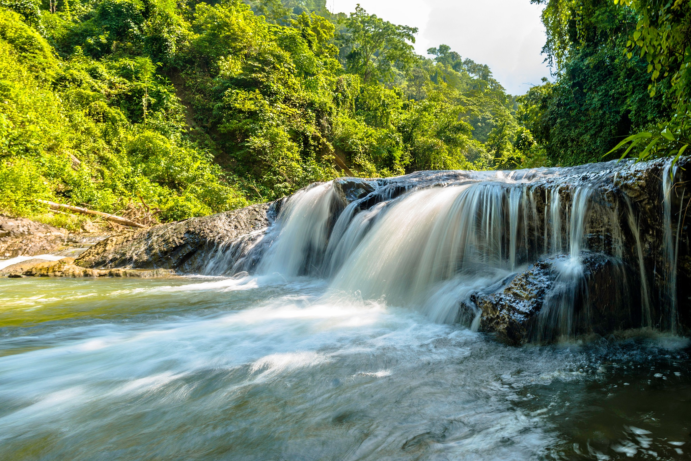

We offer trips down two of the most magestic rivers in the country
Salmon River
Nestled deep in the Frank Church Wilderness of No Return winds the Salmon River. The Salmon was given the nickname long ago ad the River of No Return by the people living near it becase of the number of folks that came ot visist and fell so in love with the rugged beauty of the river that they never left.
Let's not forget the rapids! They range from class I-IV. The Salmon is one of the longest -un-dammed rivers in the United States. As a free flowing river, the water is higher, faster, and colder inthe early summer and lower, slower, and warmer in the late summer. There are good rapids all summer ... but families with children who like ot swim tend to appreciate the summer's slower, warmer water more.
Grand Canyon river rafting combines world-class whitewater with breathtaking scenery to make one truly unforgettable river experience. The canyon is filled not only with exhilarating whitewater rapids, but with side canyons and ancient indian ruins accessable only by river.
Class I-X: The Grand Canyon uses a unique river rating scale. The rapids in the Canyon are technically rated I-X (1-10) to accomodate such a wide variety of rapids and river variances. However, most people are fimiliar with the regular I - V river ratings, so we often refer to both.
Grand Canyon